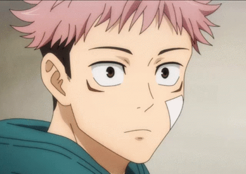

Yuji Itadori (虎杖悠仁 Itadori Yūji) es el protagonista principal de la serie manga Jujutsu Kaisen, la cual concluyó en septiembre de 2024. Originalmente un estudiante de secundaria con una fuerza física sobrehumana, su vida cambió drásticamente al ingerir un dedo maldito para salvar a sus amigos, convirtiéndose en el recipiente del Rey de las Maldiciones, Ryomen Sukuna.
A lo largo de la serie, Yuji entrenó como hechicero en el Colegio Técnico de Magia Metropolitana de Tokio bajo la tutela de Satoru Gojo. Aunque dejó de ser el recipiente principal de Sukuna durante los arcos finales (cuando Sukuna se transfirió a Megumi Fushiguro), Yuji jugó un papel fundamental en la confrontación final contra Sukuna, logrando finalmente derrotarlo.
Tras la conclusión de la batalla y la derrota de las mayores amenazas, Yuji sobrevive y, junto a sus compañeros restantes como Megumi y Nobara, retoma su vida como hechicero, continuando con la misión de exorcizar maldiciones y buscando seguir el legado y los sueños de Gojo para mejorar la sociedad Jujutsu.
Apariencia
Uniforme de hechicero de Itadori
Itadori es un adolescente musculoso y alto (1.73m y en crecimiento). Su cabello es puntiagudo, de color rosa pálido en el anime y marrón claro en el manga. Tras ser recipiente de Sukuna, desarrolló unas segundas líneas bajo sus ojos. Después de la batalla contra Mahito y Choso en Shibuya, obtuvo dos cicatrices notables en la frente.
Su vestimenta más característica es su uniforme modificado del Colegio Técnico: una camisa oscura de manga larga (azul marino en el anime, negra en el manga) sobre una sudadera con capucha roja, pantalones oscuros a juego y zapatillas rojas.
En su tiempo libre, suele vestir ropa cómoda como sudaderas y pantalones oscuros.
Personalidad

Yuji mostrando su carácter amigable
Yuji es fundamentalmente honesto, amigable y valora profundamente la vida, guiado por el último deseo de su abuelo de ayudar a los demás y asegurarles una "muerte digna". Esto lo lleva a actos de gran sacrificio personal, como ingerir el dedo de Sukuna.
A lo largo de la historia, Yuji experimenta un inmenso trauma y carga con una gran culpa, especialmente después de los eventos del Incidente de Shibuya y al presenciar las atrocidades cometidas por Sukuna mientras usaba su cuerpo. Esto lo vuelve más serio y deprimido por momentos.
A pesar del sufrimiento y las pérdidas, incluyendo la de su mentor Satoru Gojo, Yuji demuestra una resiliencia increíble. Mantiene su determinación para luchar, proteger a sus amigos y destruir las maldiciones que causan dolor, madurando significativamente y aceptando la dura realidad del mundo de la hechicería sin perder su núcleo compasivo. Al final, busca activamente mejorar el futuro de la sociedad Jujutsu.
Habilidades
Habilidad
Descripción
Notas Adicionales
Fuerza y Agilidad Sobrehumanas
Posee capacidades físicas innatas muy por encima de un humano normal, incluso antes de aprender a usar energía maldita.
Base de su estilo de combate cuerpo a cuerpo.
Maestría en Artes Marciales
Combatiente cuerpo a cuerpo excepcional, capaz de enfrentarse a maldiciones y hechiceros experimentados.
Complementa su fuerza física.
Puño Divergente
Técnica inicial donde su golpe físico es seguido por un segundo impacto de energía maldita debido a un ligero desfase.
Menos relevante a medida que mejora su control.
Destello Negro (Black Flash)
Un golpe crítico que amplifica el poder del impacto (potencia de 2.5) al aplicar energía maldita en 0.000001 segundos. Yuji es extremadamente hábil usándolo.
Logró lanzarlo consecutivamente (hasta 7 veces) en la lucha final, casi a voluntad.
Percepción/Daño del Alma
Capaz de percibir el contorno del alma y dañarla directamente con sus golpes.
Crucial contra Mahito y para intentar separar el alma de Megumi de la de Sukuna.
Manipulación de Sangre
Adquirida tras ingerir los úteros malditos restantes (Death Paintings 4-9). Le permite controlar su sangre.
Usada para ataques (ej. Piercing Blood, con ayuda) y curación/regeneración acelerada.
Técnica Maldita Inversa (RCT)
Aprendida durante el timeskip antes de la batalla final. Permite curar heridas usando energía positiva.
Esencial para sobrevivir combates intensos.
Dominio Simple
Técnica defensiva que neutraliza técnicas malditas y ataques de dominio en un área pequeña.
Aprendida durante el timeskip.
Técnica Maldita: Santuario (Shrine)
Despertó la técnica maldita de Sukuna (cortar/desmantelar) grabada en su alma debido a haber sido su recipiente.
Combina los cortes con su habilidad de dañar el alma, creando "desmantelamientos que dividen el alma". Clave en la derrota de Sukuna.
Expansión de Dominio
Manifestó brevemente una Expansión de Dominio al final de la lucha contra Sukuna.
Sus mecánicas exactas no fueron completamente exploradas. Una fuente sugiere que se asemejaba a un ring de boxeo.
Resistencia a Venenos/Maldiciones
Debido a ser el recipiente de Sukuna, desarrolló una alta resistencia a venenos y maldiciones.